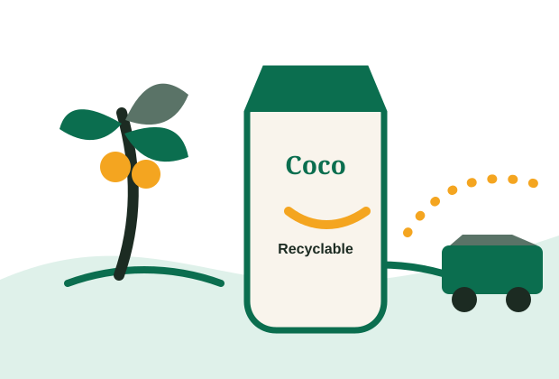

Grower partnerships
We source from farms that harvest young coconuts at peak freshness and support long-term agricultural planning instead of short-term extraction.
Sustainability
CocoWave partners with regional growers, prioritizes responsible harvesting, and chooses packaging designed to reduce waste across the product life cycle.
We source from farms that harvest young coconuts at peak freshness and support long-term agricultural planning instead of short-term extraction.
Our cartons use responsibly sourced paperboard and are selected for efficient shipping, shelf stability, and compatibility with many recycling programs.
Concentrated regional distribution routes help us reduce unnecessary transport mileage while keeping products fresh for retailers.

2026 goals